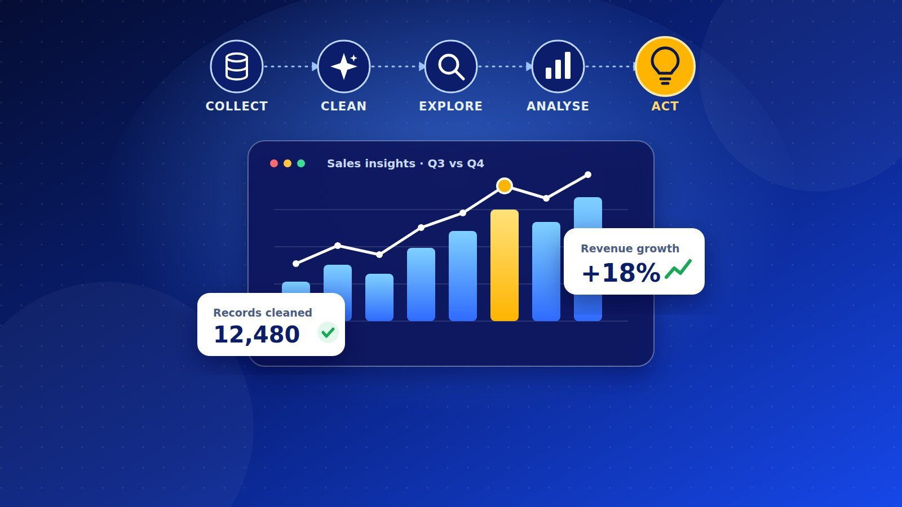

From Raw Data to Real Insights: How Data Analysis Works
Business
1. Start with the question
Good analysis begins before any data is touched. The question must be specific and measurable. "Why are we doing badly?" is too vague. "Which products and which branches caused the 12% drop in revenue between July and September?" is something you can answer.
At this stage the analyst also agrees with the decision-maker on what success looks like and what action the answer could trigger. If no decision depends on the answer, the question isn't worth analysing.
2. Collect the data
Next comes finding the data that can answer the question. Sources vary:
Internal records: sales systems, M-Pesa transaction logs, inventory sheets, customer databases. Surveys and interviews: useful when the answer is about opinions or behaviour that no system records. Public data: statistics from government agencies such as the Kenya National Bureau of Statistics, central bank data, open data portals. Digital sources: website analytics, social media, app usage.
Collection decisions shape everything after them. A biased sample, a badly worded survey question or a missing branch will mislead the analysis, and no technique can fix that later. Analysts also need permission to use the data and a plan to protect personal information, which in Kenya means following the Data Protection Act.
3. Clean and prepare the data
This stage takes most of an analyst's time, often well over half, and it is the least glamorous. Raw data is almost always messy:
Duplicate records, such as the same sale entered twice. Missing values, such as a branch that didn't report for two weeks. Inconsistent formats, such as "Nairobi", "NAIROBI" and "nbi" in the same column, or dates written three different ways. Impossible values, such as a negative quantity or a price of KSh 0. Outliers, which may be real (a bulk order) or errors (an extra zero).
Each fix is a judgment call. Delete the row, fill the gap with an estimate, or go back and ask the person who recorded it? The key habit is to keep a record of every change so the work can be checked and repeated. Tools range from Excel and Google Sheets to Python (pandas), R and SQL.
4. Explore the data
Before testing anything, the analyst looks. Exploratory analysis means summarising and charting the data to see what's in it: averages and spreads, how values are distributed, how variables move together, and where the surprises are.
In the retailer example, a simple chart of monthly sales by branch might show that one branch collapsed in August while the others only dipped slightly. That immediately narrows the search. Exploration doesn't prove anything, but it guides what to test next.
5. Analyse and model
Now the analyst applies methods that fit the question:
Descriptive analysis answers "what happened?" with totals, averages and trends. Diagnostic analysis answers "why?" by comparing groups, checking correlations and running statistical tests. Predictive analysis answers "what is likely next?" using regression or machine learning models. Prescriptive analysis answers "what should we do?" by comparing the likely outcomes of different actions.
The method should be as simple as the question allows. A clear comparison of two groups often beats a complicated model that nobody can explain. Analysts also check that the result is statistically meaningful and not just chance, and they remember that correlation is not causation. Ice cream sales and drowning both rise in hot months, but one doesn't cause the other.
6. Interpret the results
Numbers don't speak for themselves. Interpretation means connecting the findings back to the original question and asking whether they make sense in the real world. Do they agree with what people on the ground say? Could something that wasn't measured explain them?
In the example, the analysis might show the August collapse was at the branch where a competitor opened across the road, and that the loss was concentrated in one product line. That is a finding. It becomes an insight when it points to an action, such as reviewing prices on that line or running a loyalty offer at that branch.
7. Communicate the insights
The best analysis fails if the audience doesn't understand it. Good communication means:
Leading with the answer, then showing the evidence. Choosing simple charts that make one point each. Using plain language instead of technical terms. Being honest about limits: what the data can't tell us and how confident the analyst is. Ending with clear recommendations.
Dashboards, short reports and presentations all work, as long as they are built around the decision the audience has to make.
8. Act, monitor and repeat
Analysis doesn't end with the report. Once a decision is made, the same metrics should be tracked to see whether it worked. If the loyalty offer doesn't bring customers back, that is new data, and the cycle starts again with a sharper question.
The takeaway
Data analysis is a loop: question, collect, clean, explore, analyse, interpret, communicate, act. The technical tools matter, but the habits matter more: starting with a clear question, respecting data quality, staying honest about uncertainty, and explaining results in a way people can act on.